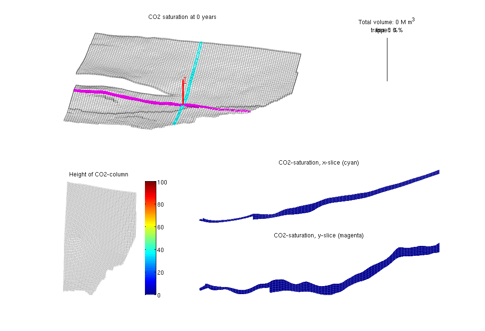
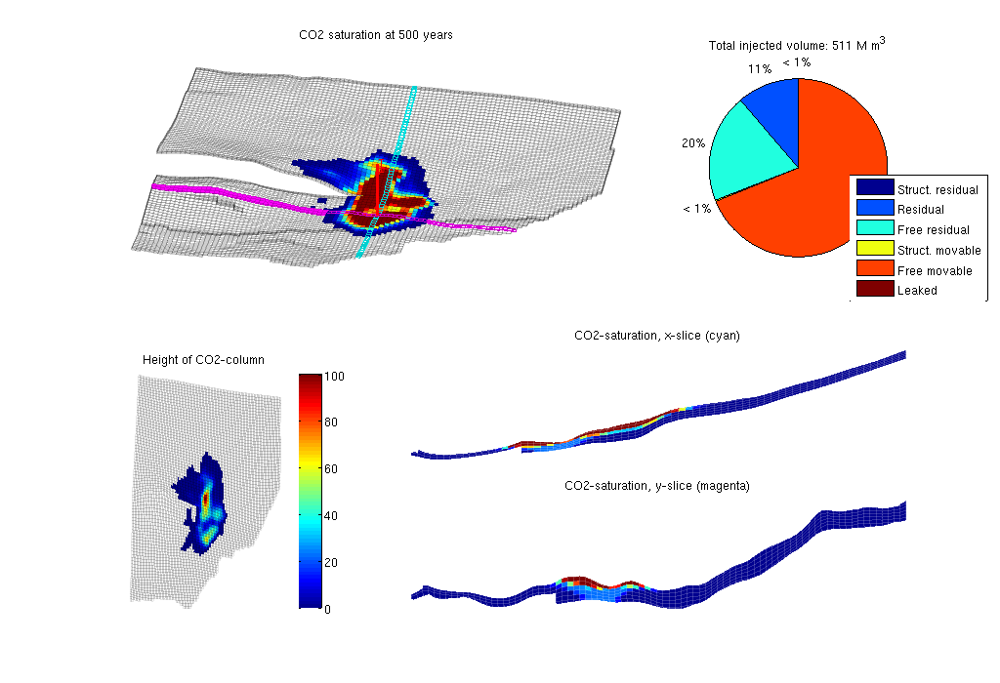

Contents
Vertical-Averaged Simulation of the Johansen Formation
The Johansen formation is a candidate site for large-scale CO2 storage offshore the south-west coast of Norway. In the following, we will use a simple vertically averaged model to simulate the early-stage migration of a CO2 plume injected from a single well positioned near the main fault in the formation. The formation is described by a geological model that has been developed based on available seismic and well data. A more thorough presentation of the geological model can be found in the script showJohansen.m
The data files necessary to run the example can be downloaded from the MatMoRA website.
require gridtools
Display header
clc; disp('================================================================'); disp(' Vertical averaging applied to the Johansen formation'); disp('================================================================'); disp('');
================================================================ Vertical averaging applied to the Johansen formation ================================================================
Input data and construct grid models
We use a sector model in given in the Eclipse input format (GRDECL). The model has five vertical layers in the Johansen formation and five shale layers above and one below in the Dunhil and Amundsen formations. The shale layers are removed and we construct the 2D VE grid of the top surface, assuming that the major fault is sealing, and identify all outer boundaries that are open to flow. Store grid and rock structures to file to avoid time-consuming processing.
[G, Gt, rock, rock2D, bcIxVE] = makeJohansenVEgrid();
-> Reading Johansen.mat
Set time and fluid parameters
gravity on T = 500*year(); stopInject = 100*year(); dT = 2*year(); dTplot = 1*dT; % Fluid data at p = 300 bar muw = 0.30860; rhow = 975.86; sw = 0.1; muc = 0.056641; rhoc = 686.54; srco2 = 0.2; kwm = [0.2142 0.85]; fluidVE = initVEFluidHForm(Gt, 'mu' , [muc muw] .* centi*poise, ... 'rho', [rhoc rhow] .* kilogram/meter^3, ... 'sr', srco2, 'sw', sw, 'kwm', kwm);
Set well and boundary conditions
We use one well placed in the center of the model, perforated in layer 6. Injection rate is 1.4e4 m^3/day of supercritical CO2. Hydrostatic boundary conditions are specified on all outer boundaries that are not in contact with the shales; the latter are assumed to be no-flow boundaries.
% Set well in 3D model wellIx = [51, 51, 6, 6]; rate = 1.4e4*meter^3/day; W = verticalWell([], G, rock, wellIx(1), wellIx(2), wellIx(3):wellIx(4),... 'Type', 'rate', 'Val', rate, 'Radius', 0.1, 'comp_i', [1,0], 'name', 'I'); % Well and BC in 2D model WVE = convertwellsVE(W, G, Gt, rock2D); bcVE = addBC([], bcIxVE, 'pressure', Gt.faces.z(bcIxVE)*rhow*norm(gravity)); bcVE = rmfield(bcVE,'sat'); bcVE.h = zeros(size(bcVE.face));
Prepare simulations
Compute inner products and instantiate solution structure
SVE = computeMimeticIPVE(Gt, rock2D, 'Innerproduct','ip_simple'); preComp = initTransportVE(Gt, rock2D); sol = initResSolVE(Gt, 0, 0); sol.wellSol = initWellSol(W, 300*barsa()); sol.s = height2Sat(sol, Gt, fluidVE); % select transport solver try mtransportVE; cpp_accel = true; catch me d = fileparts(mfilename('fullpath')); disp('mex-file for C++ acceleration not found'); disp(['See ', fullfile(VEROOTDIR,'VEmex','README'), ' for building instructions']); disp('Using matlab ve-transport'); cpp_accel = false; end % Find trapping structure in grid. Used for calculation of trapped volumes ts=findTrappingStructure(Gt);
mex-file for C++ acceleration not found See /home/moyner/repos/co2lab-release/co2lab-matlab/VEmex/README for building instructions Using matlab ve-transport Trap level 1: 41 traps identified Trap level 2: 11 traps identified
Prepare plotting
We will make a composite plot that consists of several parts: a 3D plot of the plume, a pie chart of trapped versus free volume, a plane view of the plume from above, and two cross-sections in the x/y directions through the well
opts = {'slice', wellIx, 'Saxis', [0 1-fluidVE.sw], 'maxH', 100, ...
'Wadd', 500, 'view', [-85 70], 'wireH', true, 'wireS', true};
plotPanelVE(G, Gt, W, sol, 0.0, [0 0 1], opts{:});
 Main loop
Run the simulation using a sequential splitting with pressure and transport computed in separate steps. The transport solver is formulated with the height of the CO2 plume as the primary unknown and the relative height (or saturation) must therefore be reconstructed.
t = 0; totVol = 0.0; fprintf(1,'\nSimulating %d years on injection',convertTo(stopInject,year)); fprintf(1,' and %d years of migration\n', convertTo(T-stopInject,year)); fprintf(1,'Time: %4d years', convertTo(t,year)); tic; while t<T % Advance solution: compute pressure and then transport sol = solveIncompFlowVE(sol, Gt, SVE, rock, fluidVE, ... 'bc', bcVE, 'wells', WVE); if cpp_accel [sol.h, sol.h_max] = mtransportVE(sol, Gt, dT, rock, ... fluidVE, 'bc', bcVE, 'wells', WVE, ... 'gravity', norm(gravity), 'verbose', false); else sol = explicitTransportVE(sol, Gt, dT, rock, fluidVE, ... 'bc', bcVE, 'wells', WVE, ... 'preComp', preComp); end % Reconstruct 'saturation' defined as s=h/H, where h is the height of % the CO2 plume and H is the total height of the formation sol.s = height2Sat(sol, Gt, fluidVE); assert( max(sol.s(:,1))<1+eps && min(sol.s(:,1))>-eps ); t = t + dT; % Compute total injected, trapped and free volumes of CO2 if ~isempty(WVE) totVol = totVol + WVE.val*dT; end vol = volumesVE(Gt, sol, rock2D, fluidVE, ts); % Check if we are to stop injecting if t>= stopInject WVE = []; bcVE = []; dT = 5*year(); dTplot = dT; end % Plotting fprintf(1,'\b\b\b\b\b\b\b\b\b\b%4d years', convertTo(t,year)); if mod(t,dTplot)~= 0 && t<T, continue else plotPanelVE(G, Gt, W, sol, t, [vol totVol], opts{:}); drawnow end end fprintf(1,'\n\n'); % delete C++ simulator if cpp_accel, mtransportVE(); end etime = toc; disp(['Elapsed simulation time: ', num2str(etime), ' seconds.']);
Simulating 100 years on injection and 400 years of migration Time: 500 years Elapsed simulation time: 70.3648 seconds.